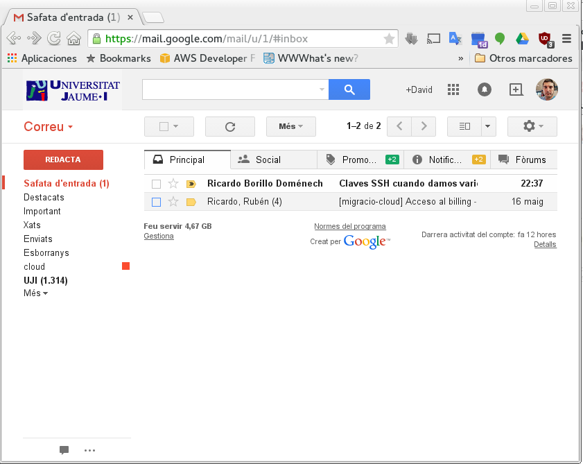

Funciones avanzadas de GMail
google
GMail
Funciones avanzadas para el uso diario
Apreta la tecla → para avanzar.

Google GMail

Herramienta de correo de Google por excelencia, nos permite gestionar el correo electrónico entre otras cosas..
La sesión de hoy nos centraremos en explicar funciones menos aprovechadas en el día a día.
- Clasificación de correo y gestión de SPAM
- Carpetas y etiquetas. Filtros de correo
- Búsqueda avanzada
Clasificación
de correos y gestión de SPAM
Apreta la tecla → para avanzar.
Clasificación de correo
Tenemos disponibles varias vistas de nuestra bandeja de entrada de correo, según nuestras preferencias:
- Predeterminada. Principal, social, promociones, notificaciones, foros.
- Importantes. Google decide cuáles son mensajes importantes y cuáles no.
- No leidos.
- Destacados. Los que hemos marcado con una estrella.
- Prioritarios. Google te los clasifica según la prioridad que le otorga a cada mensaje.
Cambia de foto con las teclas: ↑ y ↓
SPAM
GMail nos detecta el SPAM automáticamente, pero deberemos saber que:
- 30 días. El correo en la carpeta SPAM dura 30 días.
- Entrenar. Podemos entrenar al detector de SPAM clasificando mensajes como SPAM (o al revés).
- Suplantación de identidad. Son casos más graves, podemos reportar casos de Phishing si estamos seguros de ello.
Práctica
Vistas y SPAM
Apreta la tecla → para avanzar.
Vistas de correo y SPAM

- Cambia entre las diferentes vistas de correo. ¿Cuál te parece más práctica?
- En la vista predeterminada, acede a cada una de las secciones y si algún correo no está en su sección correcta, muévelo.
- Entra en la carpeta SPAM y comprueba si se ha detectado algún falso positivo. ¿Sueles recibir SPAM en la bandeja de entrada?
- Busca un correo no deseado en tu bandeja de entrada y clasifícalo como SPAM.
- ¿Sabrías gestionar un caso de suplantación de identidad?
Carpetas, etiquetas y filtros
Apreta la tecla → para avanzar.
Carpetas/etiquetas
Mantener una bandeja de entrada organizada es realmente complicado.
Objetivo: El buzón de entrada siempre debería estar limpio. Cada correo que entre lo debemos procesar en ese momento.
¿Cómo conseguirlo? Borrando aquel correo que no queremos conservar, y clasificando los mensajes que sí queremos conservar con etiquetas y carpetas.
Apreta la tecla → para avanzar.
Cómo organizar nuestro correo
Haremos uso de estas funciones de GMail: etiquetas, archivar, destacados e importantes.
- Etiquetas: Nos ayudan a catalogar y clasificar el correo según nuestros criterios.
- Archivar: Nos va a permitir quitar los mensajes de la bandeja de entrada.
- Destacados: Destacamos aquellos correos ya leidos pero que son importantes.
CONSEJO: Borrar los correos no deseados, etiquetar y archivar los correos procesados, marcar como destacados los correos que requieren nuestra atención.

Apreta la tecla → para avanzar.
Carpetas, anidamiento y ejemplos de etiquetas
Las carpetas no son más que etiquetas. Cuando movemos un e-mail a una carpeta lo estamos etiquetando y archivando.
Podemos añadir etiquetas dentro de etiquetas creando una estructura jerárquica similar a la de un sistema de almacenamiento.
Ejemplos de etiquetas útiles:
- Trabajo, Personal, Pendiente, Terminado.
- Listas de correo: UJI, PAS, SAUJI, Servei d'Esports.
- Recuerda que ya disponemos de la estrella para destacar mensajes.
Práctica
Gestión de etiquetas
Apreta la tecla → para avanzar.
Gestión de etiquetas
- Crea una etiqueta llamada UJI, y etiqueta unos cuantos mails de la lista UJI dentro de ella. Ponle un color reconocible.
- Crea ahora una etiqueta llamada "llistes", e introduce dentro de ella la etiqueta "UJI" que creaste previamente.
- Ayuda a GMail a saber qué mails son importantes y cuáles no.
- Si te ha convencido el argumento que he contado anterioremnte, intenta limpiar tu bandeja de entrada archivando todos los mensajes.
Búsqueda
Apreta la tecla → para avanzar.
Búsqueda

La herramienta de búsqueda de GMail es muy potente. Nos permite encontrar correos a partir de una serie de criterios específicos.
- Por Remitente.
- Por Destinatario.
- Por Asunto.
- Por Palabras. O que no contenga ciertas palabras.
- Por Adjunto. Incluso por tamaño de adjunto mayor que.
- Por Rango de Fecha.
Apreta la tecla → para avanzar.
Práctica
Búsqueda
Apreta la tecla → para avanzar.
Búsqueda
- Busca todos los mensajes enviados por rectorat@uji.es
- Busca todos los mensajes enviados por rectorat@uji.es que lleven un adjunto.
- Busca todos los mensajes que lleven un adjunto en 2 meses antes o después del año 2015.
- Busca todos los mensajes que contengan las palabras "Vacaciones en el mar" sin comillas.
- Busca todos los mensajes que contengan las palabras "Vacaciones en el mar" con comillas.
Filtros
Apreta la tecla → para avanzar.
Filtros
La gestión de etiquetas está muy bien, pero es un proceso tedioso. ¿Podríamos automatizarlo? Sí, con filtros.
Los filtros son procesos automáticos de gestión de correo. Se basan en un criterio y una acción.
- Criterios: Remitente, destinatario, asunto, por palabras, por adjunto, por adjunto mayor que, etc. Los mismos que las búsquedas.
- Acciones: Archivar directamente, marcar como leido, destacar, etiquetar, borrar, etc.
Apreta la tecla → para avanzar.
Práctica
Filtros
Apreta la tecla → para avanzar.
Filtros
- Crea una etiqueta llamada UJI, y etiqueta unos cuantos mails de la lista UJI dentro de ella. Ponle un color reconocible.
- Crea ahora una etiqueta llamada "llistes", e introduce dentro de ella la etiqueta "UJI" que creaste previamente.
- Ayuda a GMail a saber qué mails son importantes y cuáles no.
- Si te ha convencido el argumento que he contado anterioremnte, intenta limpiar tu bandeja de entrada archivando todos los mensajes.